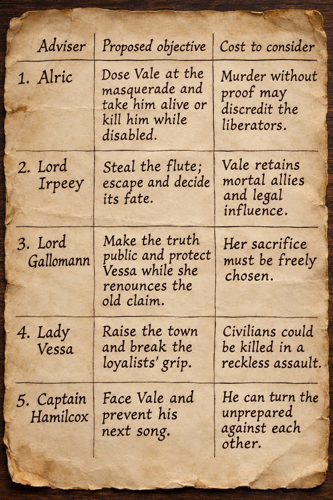

| Adviser | Proposed objective | Cost to consider |
|---|---|---|
| Alric | Dose Vale at the masquerade and take him alive or kill him while disabled. | Murder without proof may discredit the liberators. |
| Lord Irpeey | Steal the flute; escape and decide its fate. | Vale retains mortal allies and legal influence. |
| Lord Gallomann | Make the truth public and protect Vessa while she renounces the old claim. | Her sacrifice must be freely chosen. |
| Lady Vessa | Raise the town and break the loyalists' grip. | Civilians could be killed in a reckless assault. |
| Captain Hamilcox | Face Vale and prevent his next song. | He can turn the unprepared against each other. |